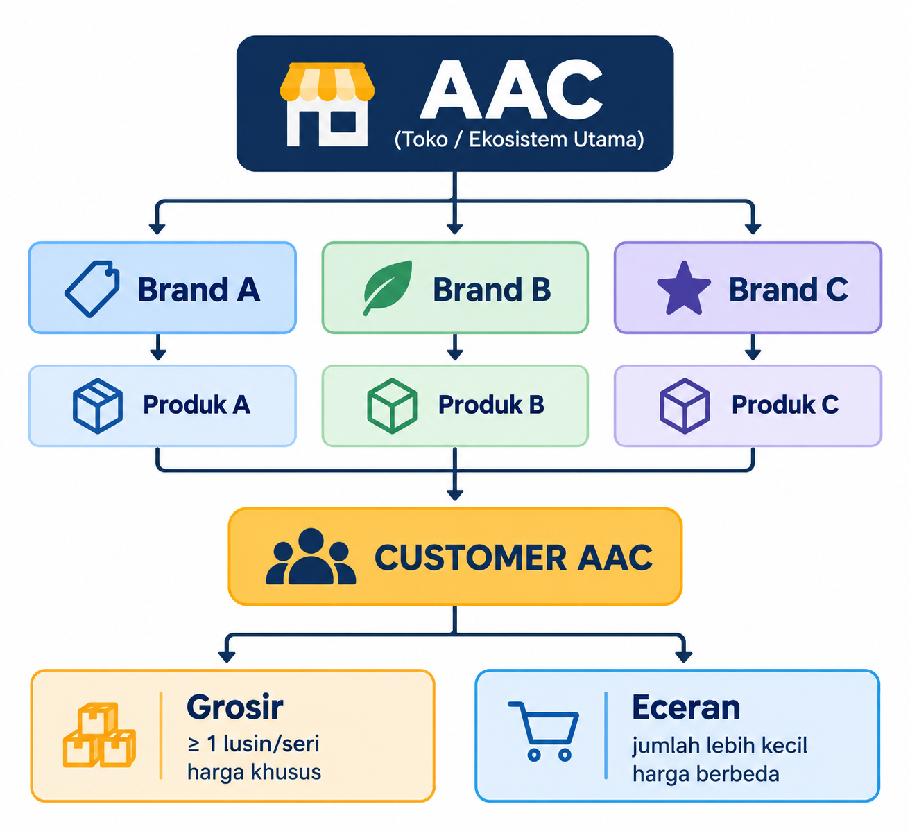
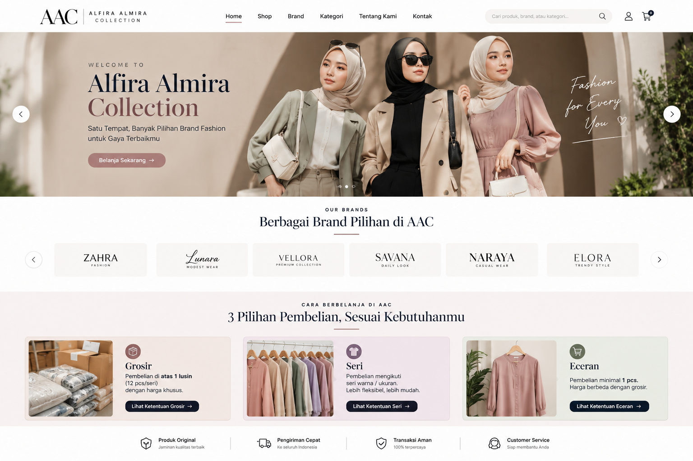
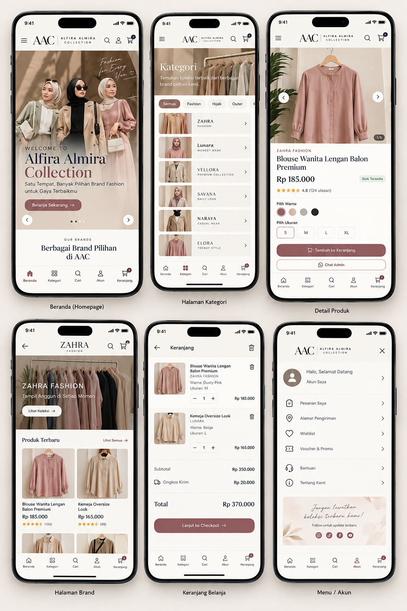

WEBSITE
Website yang saya sarankan,kita jangan memposisikan AAC sebagai sekedar toko online.
Website yang saya bayangkan justru menjadi pusat dari seluruh ekositem digital AAC.
Medsos mendatangkan perhatian & traffik,iklan mempercepat traffik.
Website menerima traffik tersebut,membangun kepercayaan,membantu mengambil keputusan,& mengubahnya manjadi customer.Prinsip ini juga sejalan dengan praktek e-commerce saat ini:
halaman produk merupakan titik penting dalam keputusan pembelian, & untuk fashion informasi tentang visual,ukuran,bahan,fit,review,serta CTA (call to action) harus mudah di temukan.
WEBSITE yang saya Rekomendasikan
Untuk saat ini,AAC bukan satu brand fashion dengan banyak koleksi,tapi lebih mirip fashion store/house of brand yang di dalamnya memiliki banyak brand.
Strukturnya kira-kira seperti ini:

Website AAC sebaiknya bukan milik satu brand.
lebih tepat kalau kita membangunnya sebagai:
Digital Fashion Store / Fashion Marketplace milik AACTetapi saya tidak menyebutnya marketplace seperti SHOPEE atau TOKOPEDIA, karena model AAC berbeda.
AAC adalah pemilik/pengelola toko & katalog,sementara brand-brand yang ada di dalamnya menjadi pilihan/colection yang tersedia di AAC.
jadi Homepage bukan langsung berkata:
ini adalah Brand AAC
Tetapi:
Selamat datang di AAC
Temukan berbagai brand dan pilihan dalam satu tempat.
Lalu orang bisa memilih:
BRAND → COLLECTION → PRODUKatau:
KATEGORI → PRODUKBagian PEMBELIAN
Ini harus jadi bagian inti dari sistem website, Bukan informasi kecil di halaman produk.
Karena AAC mempunyai 3 karakter Pembelian:
GROSIR
Customer yang pembelian nya diatas 1lsn.Mereka kemungkinan mencari:
- harga grosir
- Minimal Pembelian
- Seri/Model
- Variasi warna
- Variasi Ukuran
- Ketersediaan stok
- Katalog
- Kemudahan pesanan
SERI
Customer yang pembelian nya mengikuti seri warna/ukuran sebuah produk.
Customer dengan karakter seperti ini biasanya adalah Custumer grosir yang ingin coba-coba dulu produk/BRAND,atau bisa juga pedagang retail,tentunya dengan harga yang berbeda dengan harga grosiran.
ECERAN
Mereka bisa membeli dengan minimal pembelian 1pcs,tetapi:
Harga ecer beda dengan harga grosir atau seri.
Jadi website harus mampu membedakan 3 jalur pembelian ini.
VISUALISASI
Kalau AAC mempercayai saya,saya membayangkan website AAC seperti ini:
Tampilan di desktop/laptop

Tampilan di hp

KONSEP WEBSITE
satu tempat banyak brand pilihan
Arah Besar Desain
Konsep desain ini mengggunakan pendekatan:
Clean Minimal — Editorial — Premium — Mobile Firsttujuannya bukan membuat AAC terlihat seperti marketplace.
Justru sebaliknya.Website harus membuat AAC terasa seperti:
Sebuah FASHION STORE PROFESIONAL yang memiliki banyak pilihan Brand di dalam nya.
ini penting karena karakter AAC berbedadengan toko yang hanya menjual satu brand.
Strukturnya dapat di fahami seperti:
AAC → Brand → Koleksi/Kategori → Produk → Pembelianjadi AAC menjadi Entitas utama,Sedangkan berbagai brand yang tersedia menjadi bagian dari Ekosistem AAC.
STYLE VISUAL
Clean Minimalis
Desain menggunakan banyak ruang kosong (white space).
Tidak semua bagian layar dipenuhi gambar,tombol,banner, atau tulisan.
tujuan nya:
Website terasa lebih mahal Produk menjadi pusat perhatian Informasi lebih mudah di baca Navigasi tidak membingungkan Tampilan tidak terasa seperti market placeEditorial Fashion
Tipografi & komposisi visual mengambil pendekatan seperti majalah fashionatau katalog fashion premium.
karakteristiknya:
Headline besar Foto fashion dominan Teks pendek Komposisi lapang Penggunaan serif pada headline Sans-serif untuk informasi & navigasiini membuat website terasa lebih seperti FASHION DESTINATION daripada sekadar katalog produk.
Premium Tapi tetap Ramah
AAC tidak perlu terlihat terlalu eksklusif sampai menjauhkan pelanggan grosir.
karena itu desain menggunakan perpaduan:
Premium visual + bahasa sederhana + navigasi praktis.ini cocok dengan positioning AAC yang sudah memiliki banyak pilihan produk & pelanggan dengan kebutuhan berbeda.
MOBILE-FIRST
Ini menurut saya salah satu bagian terpenting. Website sebaiknya tidak di buat:
Desktop → diperkecil ke hpTetapi:
HP → kembangkan ke tablet & desktopKarena sebagian besar aktivitas pelanggan AAC sangat mungkin terjadi melalui hp.
Note:
Website bukan sekadar tempat menampilkan produk. Website menjadi aset digital milik AAC yang menghubungkan traffic, produk, customer, transaksi, dan data dalam satu sistem.